Candidate List 20260829Last night — ZTF: 1,001 passed basic cuts (50 young) · LSST: 0 passed basic cuts (0 young)Previous Day Next Day
Section 1: New Sources (age<1d) Section 2: Old (1-5d) sources observed last nightplaceholder
Section 1: New Afterglow/FBOT Cands Last Night (0)
Section 2: Older Sources Observed Last Night (4)
0. [ZTF] ZTF26abqfafz (Afterglow?) [Back to Top] [Share] [Trigger Swift] [Fritz Alert] [Fritz Source] [Lasair]RA, Dec: 270.61735, 10.11689 18h 2m28.16s, 10d 7m0.79sGalactic (l, b): 36.56867, 15.41916 ext(g-r) = 0.154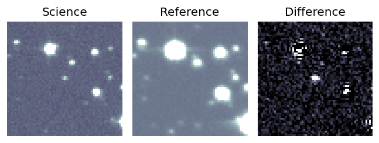
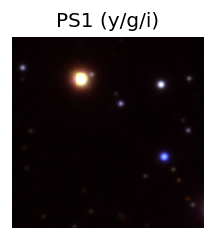

TESS: Sectors [ 80 118]
PS1: 1 source in 3 arcsec Closest: d = 7.19 arcsec photoz=0.76+/-0.27 peak abs mag = -25.45
LegacySurvey: 0 sources in 3 arcsec
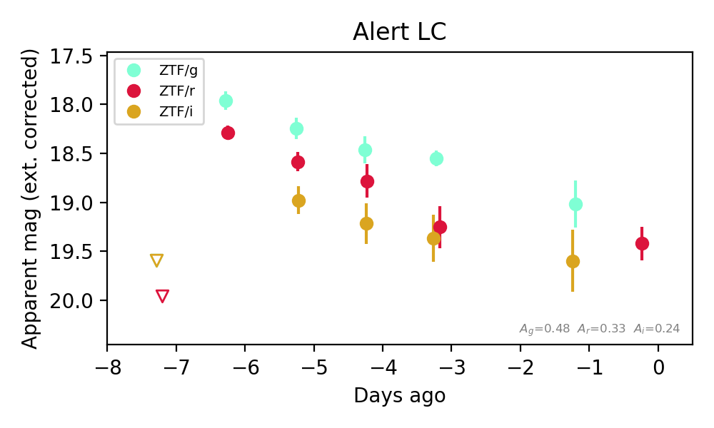
Extinction-corrected gr color:
From alerts: -0.7 +/- 0.23 mag
Extinction-corrected gi color:
From alerts: -0.58 +/- 0.4 mag
Extinction-corrected ri color:
From alerts: -0.12 +/- 0.32 mag
Consistent with synchrotron, g-r>0!
Rise Rate:
g: 1.63 mag/day
r: 1.75 mag/day
i: 0.3 mag/day
Fade Rate:
g: 0.19 mag/day
r: 0.2 mag/day
i: 0.17 mag/day
1. [ZTF] ZTF26abqqrpt (Afterglow?) [Back to Top] [Share] [Trigger Swift] [Fritz Alert] [Fritz Source] [Lasair]RA, Dec: 300.1858, 50.07426 20h 0m44.59s, 50d 4m27.34sGalactic (l, b): 84.4113, 10.34504 ext(g-r) = 0.125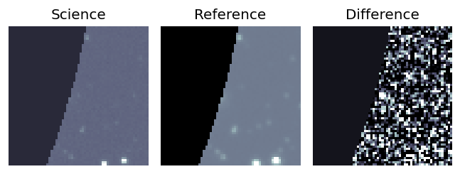
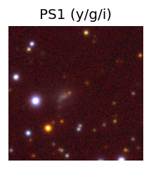

TESS: Sectors [ 14 15 16 41 54 55 56 74 75 76 81 83 120 121]
PS1: 1 source in 3 arcsec Closest: d = 2.98 arcsec photoz=0.26+/-0.08 peak abs mag = -21.59
LegacySurvey: 0 sources in 3 arcsec
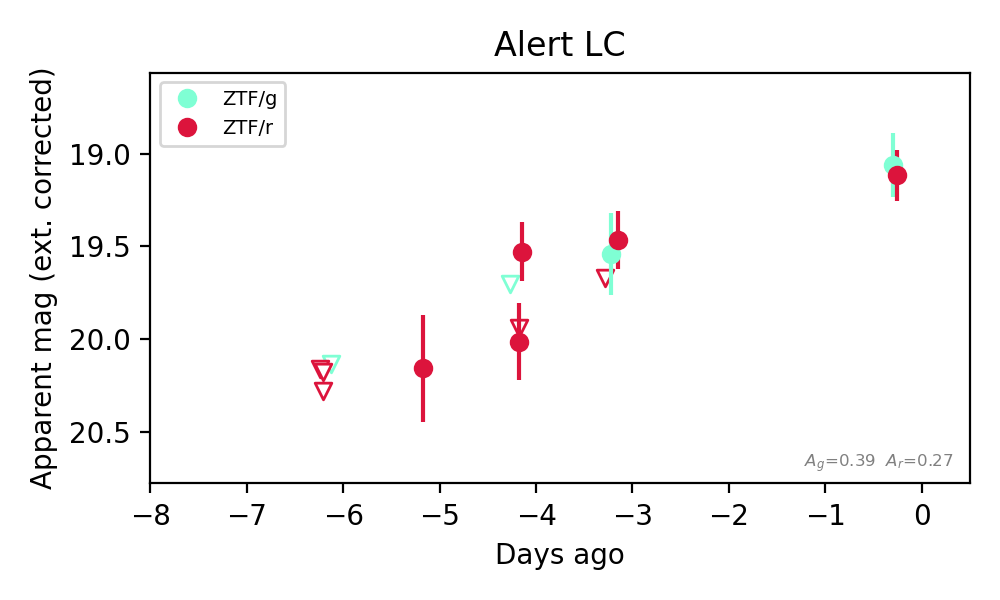
Extinction-corrected gr color:
From alerts: -0.05 +/- 0.22 mag
Consistent with synchrotron, g-r>0!
Rise Rate:
g: 0.2 mag/day
r: 13.48 mag/day
Fade Rate:
2. [ZTF] ZTF26abqmjwc (Afterglow?) [Back to Top] [Share] [Trigger Swift] [Fritz Alert] [Fritz Source] [Lasair]RA, Dec: 116.35635, 23.99188 7h45m25.52s, 23d59m30.77sGalactic (l, b): 196.34306, 22.03523 WARNING: 2.72 deg from ecliptic plane ext(g-r) = 0.059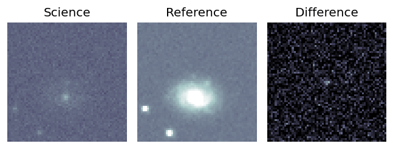
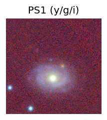
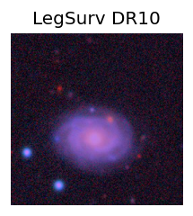
TESS: Sectors [44 45 46 71 72]
NED host (10 arcsec):Found CGCG 118-003 (G, 7.6″); NED spec-z: z=0.0434 [zflag SLS]; peak abs mag = -17.68
PS1: 0 sources in 3 arcsec
LegacySurvey: 1 sources in 3 arcsec Closest: d = 4.05 arcsec, 28.4 deg (east of north) photoz=1.66 (68% bounds 0.42, 2.7), type=PSF peak abs mag (ext. corrected) = -26.71 (68% bounds -23.05, -27.99)
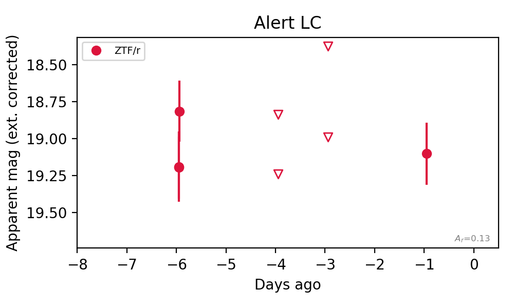
Rise Rate:
Fade Rate:
r: 0.21 mag/day
3. [ZTF] ZTF26abrbfxe (FBOT?) [Back to Top] [Share] [Trigger Swift] [Fritz Alert] [Fritz Source] [Lasair]RA, Dec: 63.92257, -0.92861 4h15m41.42s, 0d-55m-43.00sGalactic (l, b): 193.64841, -34.5164 ext(g-r) = 0.114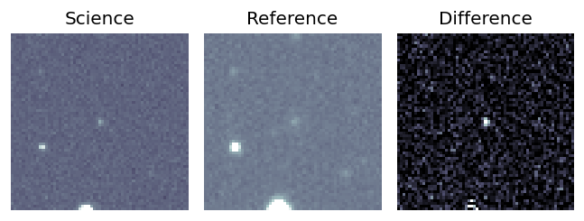
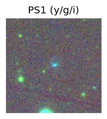
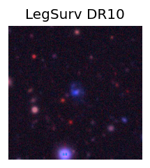
TESS: Sectors [ 5 32 109 110]
SDSS (<15 kpc):Found SDSS phot-z: z=0.12; peak abs mag = -19.79
PS1: 0 sources in 3 arcsec
LegacySurvey: 1 sources in 3 arcsec Closest: d = 0.29 arcsec, 266.5 deg (east of north) photoz=0.04 (68% bounds 0.02, 0.07), type=SER peak abs mag (ext. corrected) = -17.46 (68% bounds -15.77, -18.54)
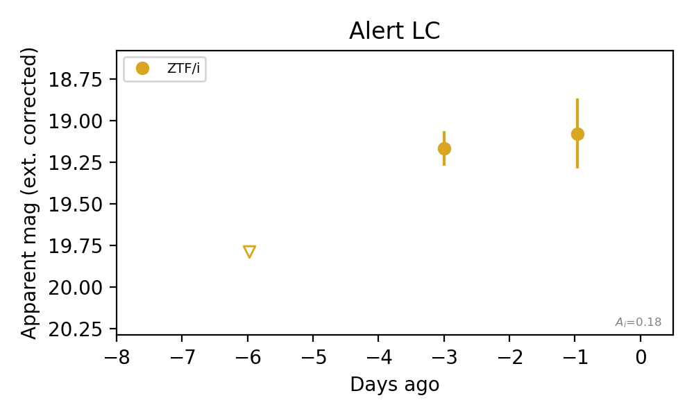
Rise Rate:
i: 0.21 mag/day
Fade Rate: